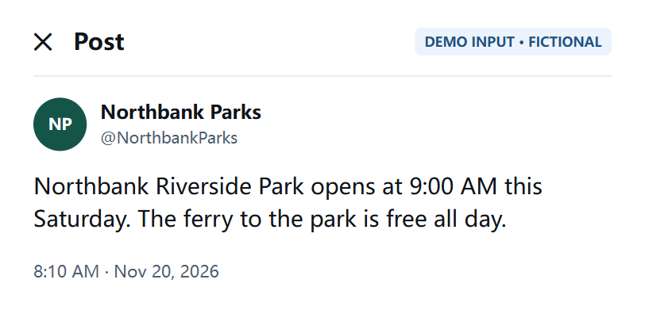
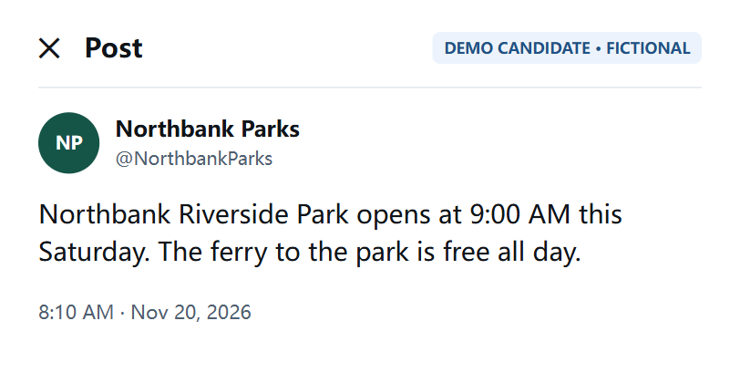

【原帖核验】🟢 截图可见内容与原帖一致
候选帖的账号、日期和正文与截图一致。
用虚构帖子和固定证据体验微信回复。无需登录微信、联网或填写 API Key。

点击「用示例试一次」查看回复。

候选帖的账号、日期和正文与截图一致。
@NorthbankParks · 演示账号
依据来自账号所填网站的回链。帖内说法另看事实核验。
证据覆盖率 100%（2/2）｜支持 1 · 反驳 1 · 待核实 0
Northbank 公园开放公告示例：“Riverside Park opens at 9:00 AM this Saturday.”
Northbank 轮渡运营公告示例：“Regular ferry fares apply throughout Saturday.”